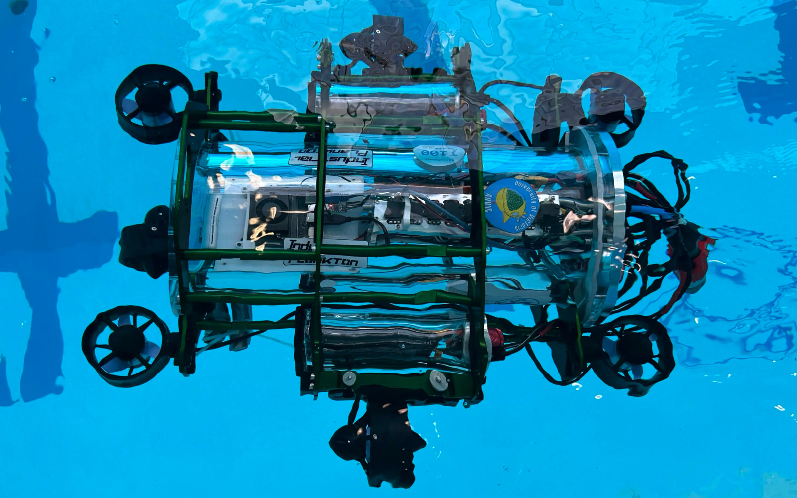

Snappy 2026

About Snappy
Snappy is AUVIC's 2026 autonomous underwater vehicle, designed to push the team's capabilities in navigation, precision, and mission performance. Building on previous designs, Snappy focuses on improved reliability, modular systems, and advanced control for competition environments.
Team Updates
Many components of the Electrical system were redesigned or iterated on for the 2025/2026 cycle. A new pcb was designed, soldered, tested and troubleshooted for this iteration of the sub. Many of the issues and grievances of the previous boards were addressed in this new design. As a result other aspects of the system were updated to work with the new design. Additionally new firmware was written for the new board and to change how the electrical boards interact with the software on the Jetson.
The team worked to overhaul the entire sub apart from the main acrylic enclosure. This allowed for a redesigned main frame which is more modular, robust, and maneuverable. A new design was created for each of the pieces of mission equipment as well. A new torpedo system was created featuring in house machined waterproof solenoid enclosures. A new dropper was designed to optimize stable and accurate drops. Finally, a fully capable claw was designed with swappable arms allowing for future tailoring to the objects required at competitions.
The 2025/2026 design cycle brought a complete rework of the software system, switching the onboard software from Python to C++ for improved performance, error handling, and architecture support. The sensors - Bar02 pressure sensor, XSens MTI 620 VRU, Intel RealSense D435i (front camera), and Intel RealSense D405 (bottom camera) - are all carried over from the kraken architecture.
Vehicle Parts
This year's claw is designed around a 4 bar mechanism that will allow the claw to grab rectangular objects more reliably. This system is actuated by an in-house waterproofed servo. The claw features swappable claw pads allowing for optimization for the objects given during competition. This will also allow the claw to be updated and used again in later competitions.
The computer vision node determines what/where objects or course components are in front of/below the AUV. To achieve this, the computer vision pipeline begins by preprocessing the raw images from the front and bottom cameras. This includes colour correction and light level correction. The corrected images are then fed into the computer vision model for object detection. The objects detected in view are given a label, confidence level, and bounding box. Finally the depth feed from each camera is added, providing an estimate of the objects' 3D positions relative to the AUV. If the confidence level is above a chosen threshold, the labels and screen positions are given to the planner for decision making.
The controller node comprises the second half of the control system, receiving the AUV's estimated position and orientation along with movement instructions from the planner node, and determines the thrust required for each thruster using a PID controller. The planner sends the controller a target location, the controller navigates to that location with the help of the state estimator, and then the controller tells the planner that the task is complete and can move to the next action.
This year's dropper utilizes two electrical solenoids placed inside in house machined waterproof enclosures. These are used to actuate the dropper, carrying two markers. These markers have been designed to optimize hydrodynamic stability in freefall after release.
As a new board was designed for this design cycle, new firmware had to be written or old firmware adjusted. Since the new board and the old boards all use stm32F4 style chips, some of the firmware on the previous systems could be adjusted and reused. However some features of the new board were completely new. For example many of the ic's on the new board for controlling various power outputs can be interacted with over I2C to read various values.
The Mowerboard was the main focus for the electrical team this design cycle and replaced two boards in the previous system. The design of the new board aimed to create a more reliable system and to fix a few unresolved issues present in the previous boards. Additionally due to age and performance issues, new thrusters and batteries were purchased and had to be accounted for on the new board.
Snappy features a mission planning node, allowing quick iteration of AUV operation and an overview of the AUV's mission plan. The planner is implemented using the BehaviorTree.CPP framework for creating behaviour trees which define operations such as movement and peripheral device activation.
When pool testing is not available, a simulation of the AUV and competition course allows software to be tested without being in the water. The simulation uses the Gazebo framework.
The state estimator node is the first half of the onboard control system, providing a continuous estimate for position and orientation of the AUV. This node takes data from the pressure sensor, VRU, and front camera, feeds it through a sensor fusion algorithm featuring an extended Kalman filter, and then sends the state estimation to the controller node.
The tether is essentially a long, waterproof ethernet cable. It allows the software team to reliably maintain a connection with the submarine, even while underwater. The tether was not ready last year, but was made a priority for this competition cycle due to the time lost due to connection issues. For this competition cycle the wires within the tether were re-soldered and then re-potted.
The goal of this year's torpedo design was to create a functional and repeatable mechanism. The team has designed and manufactured two waterproof solenoid enclosures that will be used to release the spring loaded torpedo.
The wiring harness from the previous system was redone due to the change in the pcb used on the submarine. Additionally the previous wiring harness made it hard to fit the internal electronics into the enclosure of the sub. In the new wiring harness, thicker silicone wires were used when possible to prevent any heat/resistance issues and increase the malleability of the wires. XT90’s were used for connecting the batteries to the Mowerboard to prevent sparks and inrush current. Additionally a combination of wire nuts and lever nuts were used to connect wires to allow greater flexibility.